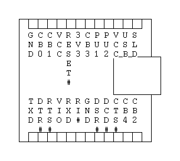
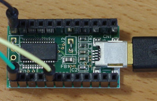

<!-- header -->

<!-- panorama -->
	
<!-- schematic -->

<!-- layout -->

<nav>
	<ul>
	<li><a href="../../../parts/stm32l052k8t/description.html" target="_blank">MCU (STM32L052K8T)</a></li>
	<li><a href="../../../parts/sli-343x8/description.html" target="_blank">LED (SLI-343x8)</a></li>
	<li><a href="../../../parts/mcp1702/description.html" target="_blank">Voltage regulator (MCP1702)</a></li>
	</ul>
</nav>

<section>
	<h3>FTDI FT232RL module (3.3V I/O)</h3>
	
	<p>
	
	
	</p>
</section>

<!-- footer -->


